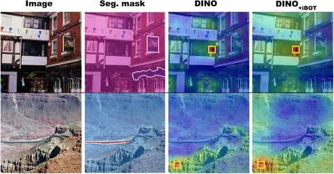
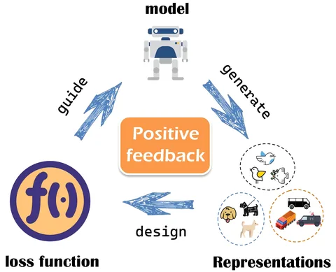
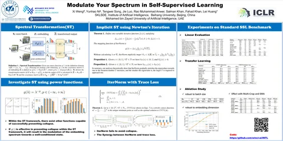
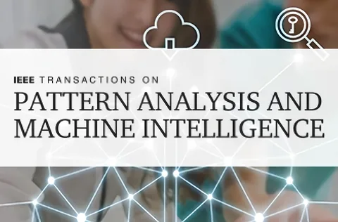
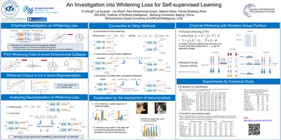
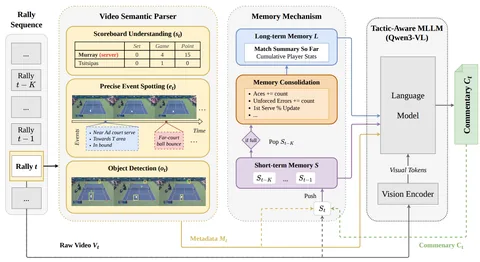
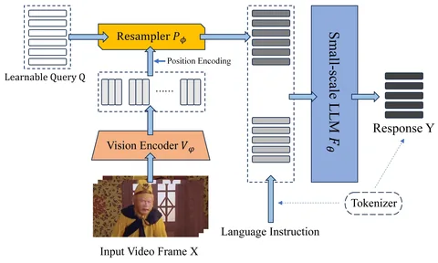
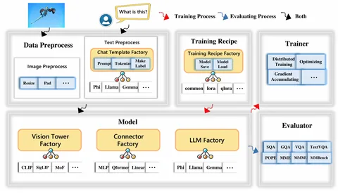
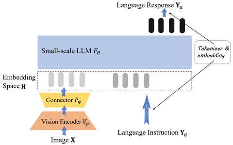

NeurIPS 2026
The Locality Trade-off in Masked Patch Self-Distillation
Advances in Neural Information Processing Systems (NeurIPS), 2026
Hi! I'm Xi Weng, and I also go by Winci. I am a second-year PhD student in Computer Science at the National University of Singapore, advised by Prof. Jin-Song Dong.
Before that, I received both my Bachelor's and Master's degrees from the School of Artificial Intelligence at Beihang University, advised by Prof. Lei Huang. My research centers on how machines can learn rich, general-purpose visual representations without labels, and how those representations power multimodal models and world models.
One paper accepted to NeurIPS 2026. New
One paper accepted to ICML 2025.
One paper accepted to TPAMI.
One paper accepted to ICLR 2024.
One paper accepted to NeurIPS 2022 as a Spotlight.
Conference reviewer
When I'm not training models
* Equal contribution
How can we learn rich, general-purpose visual representations for VLMs and world models? This question has been central to my Master's and PhD research. My work focuses on joint-embedding architectures, a paradigm strongly advocated by Prof. Yann LeCun, with particular interest in the DINO family of models and JEPA.








